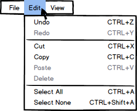

The next item on the Menu Bar is 'Edit.' As shown below in Figure 1,
the 'Edit' option lists the following modifying actions:
'Undo' - If the user modified the EClass lecture file in any way, the
user can 'Undo' that change by clicking this option. If there is
nothing to undo, (eg. upon starting the EClass program) then this option
will be greyed out.
'Redo' - The opposite of 'Undo,' if the user accidentally
undoes something the user did not mean to undo, the user may click this
option the 'Redo' that modification. Similarly to 'Undo,' if
there are no modifications to redo, then this option will be greyed out.
'Cut' - The 'Cut' function (combined with 'Paste')
allows the user to move any selected, moveable property or group of
properties within the opened EClass lecture file.
'Copy' - Unlike 'Cut,' this option will make a copy of the
selected, moveable property or group of properties for the user to paste
anywhere else.
'Paste' - This option allows the user to place whatever moveable
properties the user has either cut or copied wherever the user chooses. If
no items have been cut or copied, this option will remain greyed out.
'Delete' - Allows the user to get rid of any selected, moveable
properties or group of properties.
'Select All/Select None' - Clicking either of these options will
highlight all moveable properties on the EClass lecture file or release
them.

Figure 1: Edit drop-down menu.